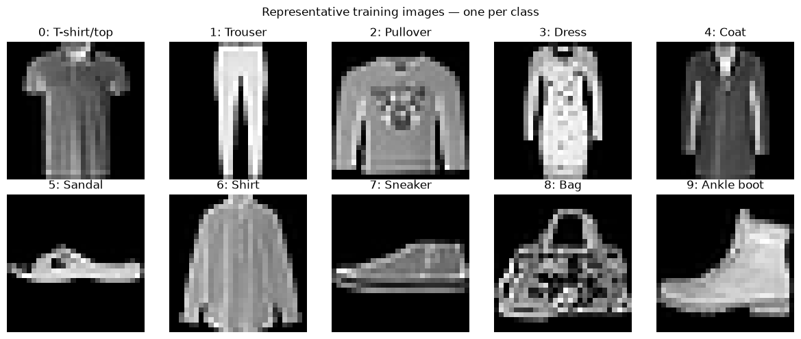
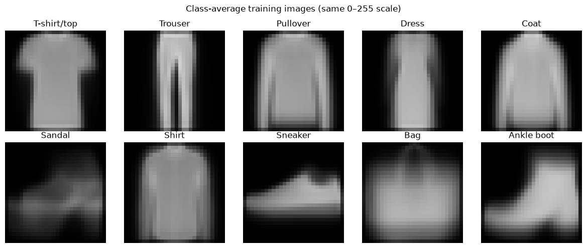
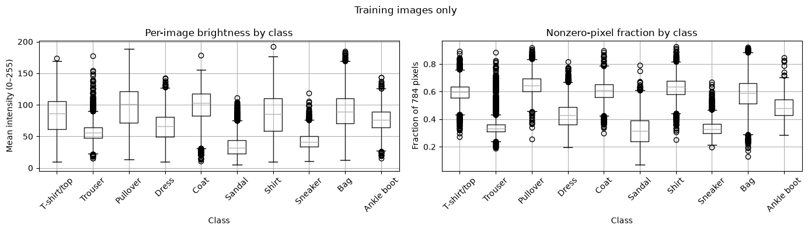
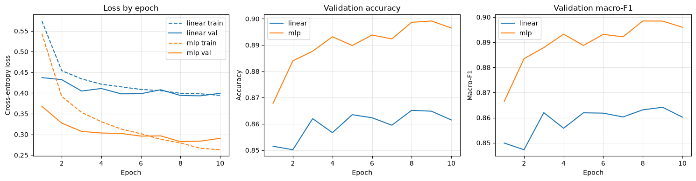

Status: M1 Draft (23 Sep 2026) · M2 Final due 21 Oct 2026
Lê Phước Vũ (2353341) · Nguyễn Vũ Long (2352696) · Nguyễn Hoàng Quốc (2353027)
We classify a single 28×28 grayscale clothing image into one of 10 product categories (T-shirt/top, Trouser, Pullover, Dress, Coat, Sandal, Shirt, Sneaker, Bag, Ankle boot). The same kind of task appears in retail catalogues, where product photos need to be sorted automatically.
uint8 pixels 0–255.
Fashion-MNIST (Zalando, MIT license) is the main comparison dataset.
We load it with torchvision.datasets.FashionMNIST. It has 60,000 official
training images and 10,000 official test images. MNIST is used only for debugging.
| Partition | Images | Per class | Source |
|---|---|---|---|
| Train | 54,000 | 5,400 | official train, stratified 90% |
| Validation | 6,000 | 600 | official train, stratified 10% |
| Test | 10,000 | — | official test (held out until M2) |
split_cache.json. Train and validation indices do not overlap, and no exact duplicate images appear in both.


Fashion-MNIST image (28×28, uint8) → ToTensor (float32, 0–1) → normalize with train-only stats (mean 0.2862, std 0.3532) → representation: flatten (784) | image (1×28×28) | row/col sequence (28×28) | patch sequence (49×16) → model → 10 logits → CrossEntropyLoss
| Model | Architecture | Params | Status |
|---|---|---|---|
| Linear / softmax | Linear(784, 10) | 7,850 | M1 done |
| MLP | 784→256→128→10, ReLU, Dropout 0.2 | 235,146 | M1 done |
| CNN | — | — | M2 |
| LSTM / GRU | — | — | M2 |
| Transformer | — | — | M2 |
Both M1 models return raw logits because CrossEntropyLoss applies the softmax internally.
The image and sequence representations are already implemented in a1/data.py for the M2 models.
| Optimizer | Adam, learning rate 0.001 |
|---|---|
| Batch size / epochs | 128 / 10 |
| Seed | 42 (same split and normalization for every model) |
| Augmentation | off in M1 (optional horizontal flip and ±10° rotation, train split only) |
| Checkpoint rule | epoch with the lowest validation loss |
| Metrics | loss, accuracy, macro-F1 |
| Hardware | Apple Silicon (MPS), macOS 26.6 |
| Software | Python 3.14.7, PyTorch 2.14.0, torchvision 0.29.0, scikit-learn 1.9.1 |
| Config | A1/configs/m1.json |
These are M1 validation results from one seed and one split. They are not test results.
| Model | Best epoch | Val loss | Val accuracy | Val macro-F1 | Params | Train time |
|---|---|---|---|---|---|---|
| Linear | 9 | 0.3932 | 0.8648 | 0.8641 | 7,850 | 27.6 s |
| MLP | 8 | 0.2825 | 0.8987 | 0.8985 | 235,146 | 28.1 s |

TODO (M2): test-set metrics, CNN/RNN/Transformer results, inference time, confusion matrices.
The MLP scores about 3.4 points higher than the linear baseline in both validation accuracy (0.8987 vs 0.8648) and macro-F1 (0.8985 vs 0.8641). It has about 30× more parameters, but training time is almost the same (about 28 s for 10 epochs on MPS). The linear model's validation loss levels off at about 0.39 by epoch 5, so it is limited by capacity. The MLP's training loss keeps falling after its validation loss bottoms out at epoch 8, which is an early sign of overfitting. With only one seed, these differences are preliminary.
TODO (M2): full five-model comparison covering accuracy, macro-F1, parameters, and training and inference time.
TODO (M2): confusion matrix and misclassified examples. The EDA suggests that most errors will come from the similar upper-body garment classes (T-shirt, Pullover, Coat, Shirt).
The group used Claude (Anthropic) via Claude Code for the following tasks in M1:
AI_USAGE.md, paths in the READMEs).A1/figures/ for use on this page.A1/README.md (setup and reproduction instructions) and A1/docs/M1_ARCHITECTURE.md.The group reviewed all AI output before including it. The full log is in AI_USAGE.md.